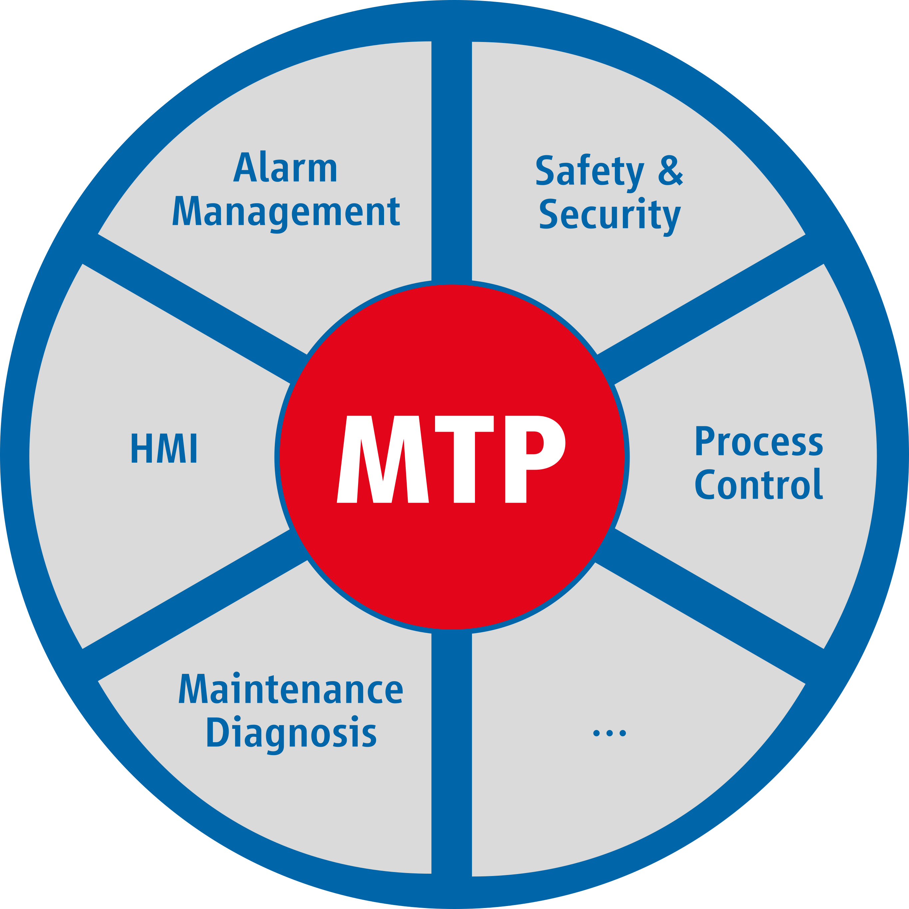

2. Module Type Package
So you are supposed to create software that interacts with the MTP… but you are not completely clear on what MTP is?
This section provides a brief overview.
2.1. What is “MTP”?
Increasingly shorter product life cycles in the process industry necessitate innovations in plant engineering and operation. The modular process engineering reduces engineering overheads significantly reduced, providing better reusability and faster time-to-market.
In this concept, each Process Equipment Assembly (PEA) (“module”) in a plant provides its specific process function that can be easily integrated into any Process Orchestration Layer (POL) (“Control System”). For this to work, the POL and the PEA must share a known interface and communication description along with a principal knowledge of how a module works and is controlled. This mechanism - called the Module Type Package - was created by the VDI/VDE/NAMUR Guideline 2658.
Figure: MTP Logo, showing some of the included aspects in the spokes. CENA’s runtime perception of the MTP focuses on the “Process Control” aspect.
The MTP is a manufacturer-independent description of the automation of PEAs [2658-1], building on XML-like technologies (AutomationML). It contains all the information required for integration into a POL - much like a driver file for a new PC peripheral. It also describes all variables to be communicated of the OPC UA server of the PEA. [2658-3]
At the same time, the MTP’s normative documents describes exactly how all MTP “DataAssemblies” (variables, valves, etc) [2658-3] and its services [2658-4] communicate and interact with the POL and how they react to specific input. The MTP also describes the HMI of the PEA (but does not contain any graphics, just the instructions) [2658-2]. Currently the POL will attempt to interact with the PEA over TCP/IP [2658-5] using the OPC UA communication protocol [IEC62541].
That’s where CENA comes into play.
Take a look at our website for in depth info, a video on MTP and contact information in case you want to know more details on the subject.
2.2. How does the CENA interact with the MTP?
The CENA software framework designed to enable rapid development and deployment of control applications on PEA controllers.
To this extent, the CENA contains all MTP relevant classes along with high-level functions that allow you - the developer - to quickly implement fully MTP conformant PEAs that can interact with any MTP conforming POL. CENA also provides the required OPC UA framework and the mechanism for OPC UA to interact with your MTP model…
With CENA, all that is left to do is to tie up hardware-level interaction with service callbacks, i.e. describe what the PEA should do when services run or valves open/close.
2.3. What do I need to know about the MTP to program a control application using CENA?
From your perspective, an MTP has services and data assemblies
Data assemblies are
variable contents like strings, analog, digital or integer variables; these can be read or written to either by the POL or the PEA like normal variables.
valves or drives (active elements), which are controlled by either the PEA or the POL. You will need to describe how “open”, “close”, “forward” and “stop” work, while CENA will take care of invoking your functions as required.
Services represent something the module can do - e.g. “mix liquids”
Services can be offline/inactive or online/active and be controlled by either
an operator or local control panel or
a control system (“external” control) or
the PEA itself (“internal” control).
Services are state based. They are initially “IDLE”, the get started, stopped, aborted, paused or held by the POL as required by the production process. You will need to describe what happens in any of these states.
Services are composed of procedures - alternatives on how to accomplish the service’s intent. Examples would be “slow mixing”, “fast mixing” or “cold mixing”. They all implement the states differently, but generally accomplish the same result with the same assets. Only one procedure can be selected/active within a single service at any point in time.
Both services and procedures may contain parameters - which are data assemblies.
CENA really takes care of all the business logic inside all these components. Your job is to compose them into a control application and tie in the appropriate drivers.
There is a section in the developer documentation that goes into a bit more detail of the MTP use in CENA.
2.4. Can CENA also be used to design MTPs? How do I do that?
Please take a look at the very same question in the Frequently Asked Questions.
2.5. Normative References
VDI/VDE/NAMUR 2658-1; “Automation engineering of modular system in the process industry: General concept and interfaces”, Beuth Verlag, draft version, 01/2022
VDI/VDE/NAMUR 2658-2; “Automation engineering of modular system in the process industry: Modelling of human-machine-interfaces”, Beuth Verlag, 11/2019
VDI/VDE/NAMUR 2658-3; “Automation engineering of modular system in the process industry: Library for data objects”, Beuth Verlag, 03/2019
VDI/VDE/NAMUR 2658-4; “Automation engineering of modular system in the process industry: Services”, Beuth Verlag, 2022
VDI/VDE/NAMUR 2658-5; “Automation engineering of modular systems in the process Industry - Runtime and communication aspects”, Beuth Verlag, draft version, 2021
IEC TC 65/SC 65E; “IEC TR 62541-1:2020 OPC Unified Architecture - Part 1: Overview and concepts”, IEC, 11/2020